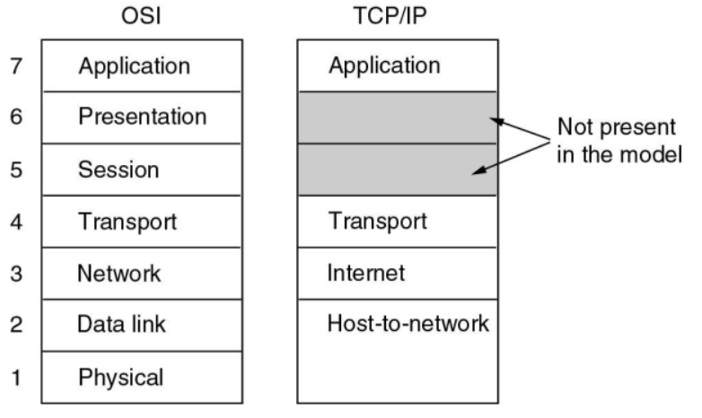

计算机网络1：OSI七层模型
Randomstar 2020.09-2021.01
- 成绩组成
- 平时成绩 50%
- 平时小作业
- 8个lab
- 课堂表现和quiz
- 期末考试 50%
- 平时成绩 50%
Chapter1. Introduction
1.1 网络模型
OSI 七层模型：三个重要概念：服务，接口和协议
- 物理层：在一条通信信道上传输比特
- 要确定用什么电子信号表示0和1，一个比特持续多久，传输是否可以双向，连接如何建立等等
- 数据链路层：发送方将输入数据拆分成若干数据帧(frame)，然后按照一定的顺序来发送这些数据帧
- 接收方必须确认收到的每一帧，保证数据的顺序和完整性，然后发回确认帧
- 为了防止发送方淹没慢速的接收方，需要对流量进行调节
- 介质访问控制子层则是控制对共享信道的访问，没有拥塞控制的功能
- 网络层：控制子网的运行，将数据包从源端发送到接收方，需要处理拥塞
- 允许异构的网络相互连接成互联网络
- 传输层：接受会话层的数据，将数据分割成小单元，然后传到网络层
- 传输层是真正的端到端的层，始终将源数据从源端带到接收方
- OSI模型中1-3层是链式连接的，而4-7层是端到端的
- 会话层：负责管理主机间的会话进程，利用传输层提供的端到端的服务，向表示层提供增值服务，主要表现为表示层实体或者用户进程建立连接并在连接上传输数据
- 这一过程也称为建立同步
- 表示层：关注传递信息的语法和语义，主要是实现数据的格式转换和压缩
- 应用层：包含了各种各样的协议，提供了用户和网络的接口
- 软件开发基本都是应用层的工作

- 几种常见设备所处的OSI七层模型的层级：
- 路由器：网络层
- 交换机：数据链路层
- 集线器：物理层
- 物理层：在一条通信信道上传输比特
TCP/IP
- 原本是Linux/Unix下的一个网络通信栈，比较OSI七层模型简单
- 没有表示层和会话层，物理层和数据链路层Host-to-network
- 因为开放，所以用的人多，所以成为了互联网的标准
- 混合模型 hybrid model——本课程讨论的模型
- 物理层
- 数据链接层
- 网络层：可能分为内层和外层
- 传输层
- 应用层
1.2 协议架构
- 几个关键词：
- Protocol 协议
- Layer 层
- Peers 对等——不同的host之间存在对等的协议层
- Interface 接口——传输的过程中上层协议会调用下层协议的接口
- Protocol Stack 协议栈
- 数据传输的过程：
- 在source machine中，数据自顶向下传输，每一层会给上一层传输的数据包添加一个header，如果传输的数据包过大则会把数据包进行拆分，但是header不会进行拆分
- 在destination machine中，则一步步去掉底层的header，并将小的数据包合并
1.3 服务 Service
服务类型
- 面向连接的服务 connection-oriented
- Reliable message stream 可信信息流，比如page的序列
- Reliable byte stream 可信字节流，比如远程登录，TCP/IP协议向应用层发送的是字节流
- Unreliable connection 不可信连接，比如数字化语音
- 不需要连接的服务 connection-less
- Unreliable datagram 不可信数据报，比如垃圾邮件
- Acknowledged datagram 共识数据包，比如注册邮件
- Request-reply 请求回复，比如数据库查询
- QoS 服务的质量
- 面向连接的服务 connection-oriented
服务原语 Service Primitives
- 面向连接服务的5个服务原语
| Primitive | Meaning |
| ————— | ————————————— |
| LISTEN | 等待一个还没来的连接 |
| CONNECT | 和一个等待的对等层进行连接 |
| RECEIVE | 等待一个还没来的message |
| SEND | 向对等层发送一个message |
| DISCONNECT | 结束一个连接 |- Request—Indication—Response—Confirm
1.4 C/S模式
- Client-Server Model 客户端主动连接，服务端被动连接
- 客户端之间不能直接通信，客户端的通信也需要经过服务器
- 新技术：服务器分配端口，让两个客户端直接通信，不需要所有数据经过服务器
- 当客户端升级的时候需要更新整个客户端，手机APP就是C/S模式
- Browser-Server Model 从C/S体系发展而来
- 通过浏览器来实现用户和服务端的交互，只需要升级浏览器
Peer-to-peer Model(P2P模式)——对等网络
- 每个客户端同时又是服务端，没有固定的客户端和服务端
wireless network 无线网络
- 注意和移动计算mobile computing的区别，移动计算可以是有线的，可以是无线的
- wifi就是一种无线网络
1.5 网络传输
- 三种传输方式：
- Broadcast links 广播式传输
- 传输模型类似于总线，总分式结构
- 以太网的原理都是基于广播的
- Point-to-point limks 点对点传输
- 传输模型是一张复杂的网——网络拓扑结构
- 一次只发给一台计算机
- multicasting 多点广播
- 传输模型是一个环，一次发给一组计算机
- 不是天然存在的，需要通过软件系统来实现多点广播机制
- Broadcast links 广播式传输
- 网络的类型：按照规模来划分
- 个人区域网 Personal area network(PAN)
- 局域网 Local area network(LAN)
- 层域网Metropolitan area network(MAN)
- 技术的可替代性比较强，局域网大一点就可以作为层域网，广域网小一点就可以作为层域网
- 广域网Wide area network(WAN)
- 特点是会有很多router和subnet
- 最大的网络就是因特网 The Internet
1.6 性能指标
这一部分来自XXR版计网，作为基础知识了解一下
- 数据率和比特率：表示数据传送的速率，单位是bit/s，也写作bps
- 带宽 bandwidth
- 带宽本来是指某个信号具有的频带宽度，也就是某个信号所处频率区间的长度，这种意义上的带宽单位是HZ
- 但是在计算机网络中也可以指某个信道的最大传输速率，此时的单位也是bit/s
- 事实上两种说法一种是频域称谓，另一种是时域称谓
- 吞吐量：表示单位时间内某个网络每秒的实际数据量，并不是实际数据总量
计算机网络1：OSI七层模型
http://zhang-each.github.io/2021/05/04/cn1/